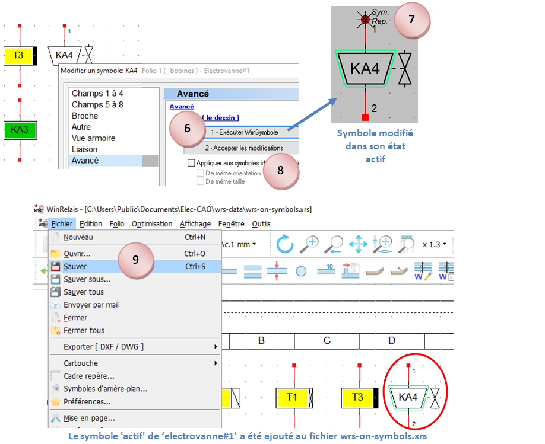
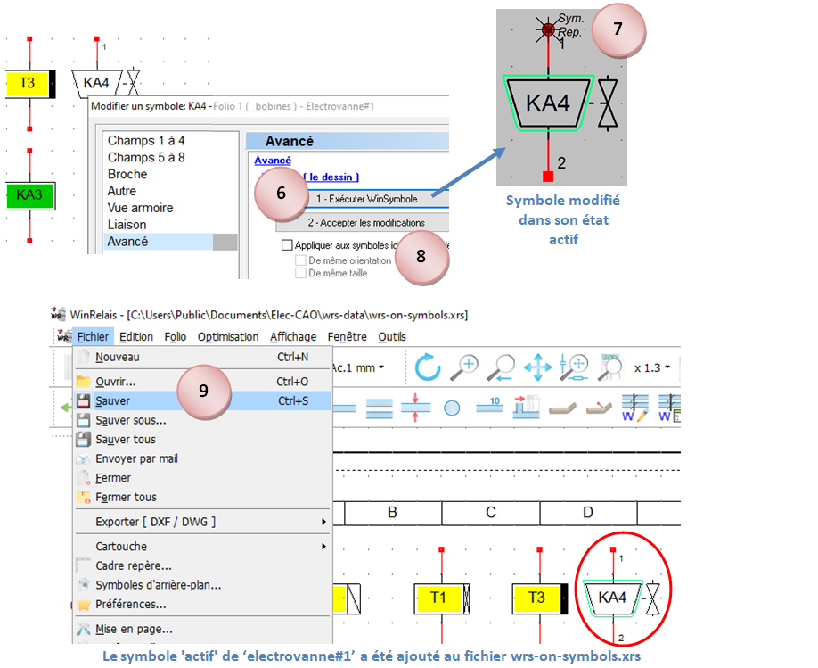

Bibliothèque simulable
Accessibilité
WinRelais expose la bibliothèque des composants simulables (dossier D4) selon trois méthodes :

L'explorateur permet d'accéder facilement au dossier blocs_simulables qui permet de récupérer des sous-ensembles de simulation complets :

Méthode 1 : placer un symbole
Méthode 2 : chercher et placer un symbole

Explorateur : explorer et placer un symbole par glisser-déposer
Créer un symbole à partir d'un symbole existant
Il est possible de décliner un nouveau symbole à partir d'un symbole existant pour adapter son dessin et la disposition des bornes selon les besoins. Le nouveau symbole héritera de toute la logique de simulation du symbole père. Le visuel du symbole peut-être défini avec WinSymbole ou avec une image (appelée aussi texture) au format png.
Contraintes :
- Le nom des broches ne doit pas être modifié.
- Le nombre de broches ne doit pas changer.
Exemple 1 : On souhaite créer un symbole d'ampèremètre de forme carrée.
- Placer le symbole 'amperemetre' sur le folio.
- Aller dans Modifier un symbole\Avancé\Exécuter WinSymbole.
- Modifier le symbole à sa convenance dans WinSymbole. Enregistrer la modification (Ctrl-S).
- Accepter les modifications.
- Sauver le symbole dans la bibliothèque '_InstrumentsDeMesure' en le nommant 'amperemetre#carre'. (Ne pas utiliser de caractères accentués pour nommer les symboles)
Il est très important de garder le même nom de départ, 'amperemetre' dans l'exemple, puis d'ajouter le caractère '#' suivi du nom de son choix. Le symbole '#' indique au simulateur que le nouveau symbole 'carre' est une déclinaison du symbole 'amperemetre'.
Exemple 2 : On souhaite ajouter un symbole d'électrovanne à la famille '_Bobines' qu'on appellera 'electrovanne#1'.
L'opération est plus longue que dans l'exemple précédent car il faut créer le dessin du symbole quand il est actif. Le dessin des symboles actifs sont rangés dans le fichier : C:\Users\Public\Documents\Elec-CAO\wrs-data\wrs-on-symbols.xrs
- Placer le symbole 'electrovanne' de la famille '_Bobines' sur le folio.
- Modifier le symbole comme dit aux points 2.3 et 4 de l'exemple 1.
- Sauver le symbole dans la bibliothèque ''_Bobines en le nommant 'electrovanne #1'.
- Ouvrir le schéma 'wrs-on-symbols.xrs' dans WinRelais. Sélectionner de préférence le folio '_bobines' .
- Placer le symbole fraichement enregistré 'electrovanne #1' sur le folio.
- Aller dans Modifier un symbole\Avancé\Exécuter WinSymbole.
- Modifier le symbole à sa convenance dans WinSymbole. Enregistrer la modification (Ctrl-S).
- Accepter les modifications.
- Enregistrer le schéma 'wrs-on-symbols.xrs'.
 

Exemple 3 : Utilisation d'une image au format png pour créer le visuel d'une electrovanne qui sera nommée 'electrovanne #2'
On peut trouver que les possibilités de dessin de WinSymbole ne sont pas suffisantes pour créer le visuel des symboles. Il est alors possible d'utiliser une texture qui sera éditée dans un logiciel à part. Le visuel de l'objet 'electrovanne' initial manipulé précédemment est construit avec cette texture :

- Placer le symbole 'electrovanne' de la famille '_Bobines' sur le folio.
- Sauver le symbole dans la bibliothèque ''_Bobines en le nommant 'electrovanne #2'.
- Accéder à la texture 'electrovanne.png' présente dans le dossier :\ C:\Users\Public\Documents\Elec-CAO\wrs-data\sym_textures\_Bobines\Electrovanne.png
- Copier dans le même dossier la texture renomme en 'electrovanne#2.png'
- Editer la texture 'electrovanne#2.png' dans un logiciel adéquat, (GIMP par exemple) selon les besoins, puis enregistrer. (commande 'Ecraser electrovanne#2.png' avec GIMP)

Mode(s) de dessin par famille de symboles
| Famille | Mode(s) de dessin |
| \_API | WinSymbole seulement |
| \_Bobines | Texture ou WinSymbole |
| \_Bornes | Texture ou WinSymbole |
| \_Boutons | Texture ou WinSymbole |
| \ _Contacteurs | WinSymbole seulement |
| \_Contacts_Commande | Texture ou WinSymbole |
| \_Detecteurs | Texture ou WinSymbole |
| \_Disjoncteurs | WinSymbole seulement |
| \_Divers_Pneumatiques | WinSymbole seulement |
| \_Fins_De_Course | Texture ou WinSymbole |
| \_Grafcet | WinSymbole seulement |
| \_Intruments_de_Mesure | WinSymbole seulement |
| \_Interrupteurs_Sectionneurs | WinSymbole seulement |
| \_Masses+Terres | WinSymbole seulement |
| \_Moteurs_Alternatifs | WinSymbole seulement |
| \_Moteurs_Continus | WinSymbole seulement |
| \_Relais_Thermiques | WinSymbole seulement |
| \_Resistances | WinSymbole seulement |
| \_Sectionneurs_Porte_Fusibles | WinSymbole seulement |
| \_Signalisation | Texture ou WinSymbole |
| \_Sources | Texture ou WinSymbole |
| \_Transformateurs | WinSymbole seulement |
- Un symbole qui possède le mode de dessin par défaut 'WinSymbole' peut être décliné en en autre symbole uniquement avec WinSymbole.
- Un symbole qui possède le mode de dessin par défaut 'Texture' peut-être décliné en un autre symbole avec une texture modifiée, ou avec une description WinSymbole.
Paramétrage des composants généraux
(disponible dans 'Modifier un objet' dans WinRelais)
| Relais, relais temporisé, cadenceur | bibliothèque _bobines |
|---|---|
| vn = | tension de la bobine [12 à 230 V] |
| pn = | puissance nominale [12 à 230 V] |
| toff = | retard à la désactivation [0 à 30 s] |
| ton = | retard à l'activation [0 à 30 s] |
| Contacts temporisés | bibliothèque _contacts_commande |
|---|---|
| toff = | retard à la désactivation [0 à 30 s] |
| ton = | retard à l'activation [0 à 30 s] |
| Signalisation | bibliothèque _signalisation |
|---|---|
| v = | tension de la bobine [12 à 230 V] |
| couleur = | couleur du voyant [rouge, vert, bleu, orange, blanc] |
| Disjoncteur + DDR | bibliothèque _disjoncteurs |
|---|---|
| In = | calibre [0.5 à 100 A] |
| retard = | retard intentionnel [0 à 10000 ms] |
| courbe = | courbe de déclenchement [B, C, D] |
| idn = | sensibilité du différentiel [10 à 10000 mA] |
| retard_diff = | retard intentionnel du DDR [0 à 10000 ms] |
| Fusible | bibliothèque _sectionneurs_porte_fusibles |
|---|---|
| In = | calibre fusible [0.5 à 100 A] |
| retard = | retard intentionnel [0 à 10000 ms] |
| type = | type de cartouche [aM, gG] |
| Relais thermique | bibliothèque _relais_thermiques |
|---|---|
| ith = | seuil thermique [0.1 à 100 A] |
| Moteur alternatif | bibliothèque _moteurs_alternatifs |
|---|---|
| Pu = | puissance utile moteur [90 W à 22 kW] |
| nm = | vitesse nominale moteur [740 à 3000 rpm] |
| cos = | cos(phi) moteur [0.5 à 1] |
| rendement = | rendement moteur [0.5 à 1] |
| venroulement = | tension nominale aux bornes d'un enroulement [127 à 400 V] |
| couplage = | couplage moteur [étoile, triangle] |
| Moteur continu | bibliothèque _moteurs_continus |
|---|---|
| pu = | puissance utile moteur [90 W à 22 kW] |
| nm = | vitesse nominale moteur [740 à 3000 rpm] |
| vinduit = | tension d'induit [12 à 320 V] |
| rendement = | rendement moteur [0.5 à 1] |
| Source, alimentation stabilisée, transformateur | bibliothèque \ _sources |
|---|---|
| pression = | pression air comprimé [0 à 10 bar] |
| vin = | tension d'entrée [12 à 400 V] |
| vout = | tension de sortie [12 à 400 V] |
| vout1 = | tension de sortie [12 à 400 V] |
| vout2 = | tension de sortie [12 à 400 V] |
| Résistance de puissance | bibliothèque _resistances |
|---|---|
| pn = | puissance nominale [10 W à 22 kW] |
| venroulement = | tension nominale aux bornes d'un enroulement [230 ou 400 V] |
| Potentiomètre | bibliothèque _resistances |
|---|---|
| valeur = | résistance du potentiomètre [1m à 10M ohms], (10m, 10, 10k, 2.2 M) |
| alpha = | position du curseur [0 à 100 %] |
| Résistance simple | bibliothèque _resistances |
|---|---|
| valeur = | résistance [1m à 10M ohms], (10m, 10, 10k, 2.2 M) |
| Instruments de mesure | bibliothèque _instruments_de_mesure |
|---|---|
| type = | type de mesure [moyenne, efficace] ou [avg, rms] |
| afficher ici | permet de positionner la valeur de la mesure sur le folio |
| * | idem que afficher ici |
Signalétique des composants électriques:
Symboles utilisés dans la simulation pour donner l'état des composants électriques :
 Protection électrique armée (disjoncteur
et fusible)
Protection électrique armée (disjoncteur
et fusible)
 Ouverture protection électrique sur surcharge ou court-circuit
(disjoncteur et fusible)
Ouverture protection électrique sur surcharge ou court-circuit
(disjoncteur et fusible)
 Ouverture protection sur courant de fuite (DDR)
Ouverture protection sur courant de fuite (DDR)

Indicateur de l'état individuel de cartouches fusibles. Exemple sur un porte-fusible tripolaire avec deux cartouches fusibles fondues.
 Récepteur sous-alimenté
Récepteur sous-alimenté  Récepteur suralimenté
Récepteur suralimenté